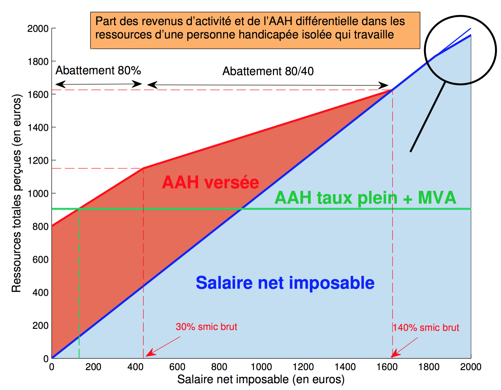
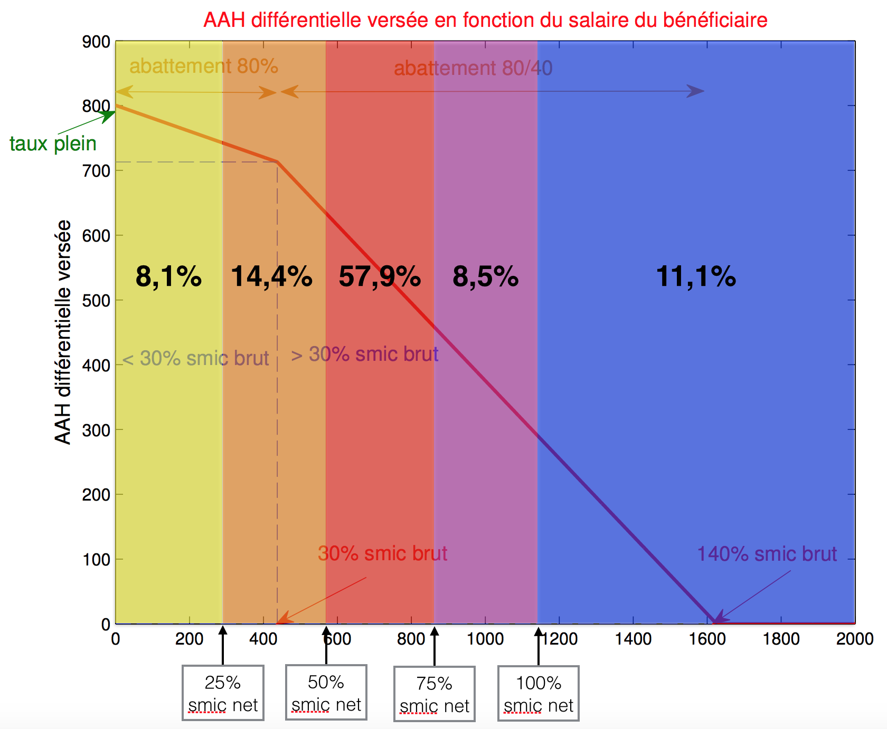
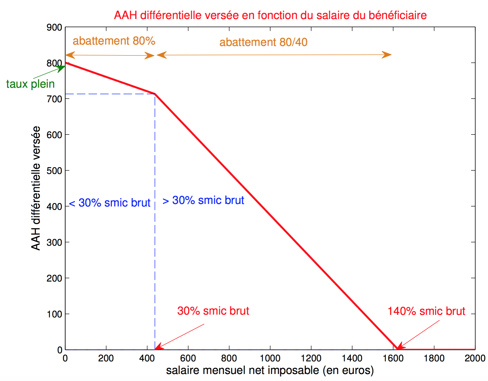

Non je ne suis pas (de nouveau) tombé sur la tête, et je n’écris pas non plus cet article suite à une insolation 😉

Introduction
Pendant mes vacances j’ai voulu traiter une question sérieuse que plusieurs personnes avant moi se sont posées - dont Marcel Nuss et les Handignés 123 - comme potentielle réponse à l’abolition du “prix de l’amour”, vous savez, cette situation où lorsque vous, personne handicapée, décidez de vous déclarer en couple à la CAF avec une personne qui travaille, et qu’alors vous perdez tout ou partie de votre allocation adulte handicapé (AAH), devenant ainsi financièrement dépendant de votre conjoint. C’est l’histoire de Xavier Jolly tétraplégique, de Richard Guilmette, et de tant d’autres, qui doivent renoncer à la vie de couple, à cause d’un mode de calcul injuste qui mériterait d’être révisé. C’est l’objet de cet article… mais avant laissez moi vous expliquer…
1 Manifeste des Handignés
2 Rapport de Marcel Nuss pour la commission des affaires sociales du Sénat, partie “Ressources des personnes handicapées” (p.36) [juin 2007]
3 Les chroniques d’un autre monde : (in)justices sociales, blog de Marcel Nuss [avril 2014]
Dans un précédent article, Le mariage pour tous, sauf pour les personnes handicapées, j’expliquais en détail le calcul engendrant cette situation de dépendance, mais surtout, j’énumérais toutes les fois où cette question fut soulevée par différents députés à l’assemblée nationale. La même réponse était systématiquement donnée, un simple rappel à la législation stipulant que
L’AAH est un minimum social et non une prestation compensatoire, et obéit de fait au principe de subsidiarité.
Autrement dit de par son caractère juridique, l’AAH est vouée à la prise en compte des revenus du conjoint. Il n’y a dès lors plus aucun débat à avoir, plus aucun argument logique à avancer, plus aucune révision envisageable face à un tel argument d’autorité, “c’est comme ça” dirait l’autre. Pour autant, le droit n’est pas immuable, il subit constamment des réformes (la loi Macron récemment, revient sur un grand nombre de dispositions du droit du travail), et après tout le statut de l’AAH n’est pas non plus gravé dans le marbre…
Pourquoi ne pas sortir l’AAH des minima sociaux ? Et si l’on rendait l’AAH imposable ?
PARTIE I : Explications du fonctionnement actuel de l’AAH comme minima social avec prise en compte des revenus du conjoint
Si je travaille et cumule en partie l’AAH, combien d’impôt vais-je payer ?
Tout d’abord, si vous ne percevez aucun revenu, et donc que vous touchez l’AAH à taux plein, vous ne payerez pas d’impôt, car l’AAH n’est actuellement pas imposable.
Si maintenant vous travaillez et que vous percevez un salaire, celui-ci sera soumis à l’imposition. Regardez le graphique ci-dessous qui vous donne le montant d’impôt à payer (mensuel) en fonction de votre salaire, suivant que vous êtes valide ou invalide (les personnes handicapées bénéficient d’une demi part supplémentaire et d’abattements spécifiques dans le calcul de l’impôt) :
Pour les détails du calcul de l’impôt vous pouvez consulter mon article :
Impôt 2015 : explication du calcul pour une personne valide et invalide
Puisque l’on sait maintenant combien on doit payer d’impôt suivant ses revenus, on est capable de calculer ses revenus mensuels réels, c’est-à-dire ce que l’on touche effectivement chaque mois après déduction des impôts. Plus formellement :
Le graphique suivant vous donne vos revenus mensuels réels (cumul de votre salaire et de l’AAH versée après déduction des impôts). Nous reviendrons sur ce graphique dans la deuxième partie. 
De combien l’AAH va-t-elle diminuer si je me déclare en couple ?
Dans les dispositions actuelles, si vous vous déclarez en couple, le montant de votre AAH sera directement relié au salaire de votre conjoint. En effet au calcul de votre assiette (abattement 80/40) viendra s’ajouter celle de votre conjoint (abattement 20%), qui nous allons voir - même en dépit d’un doublement du plafond - diminue le montant de l’AAH versée pour une grande majorité des bénéficiaires.

Quels effets sur l’AAH versée ?
- Cas d’un bénéficiaire qui travaille (17%)
Le graphique ci-dessous donne l’AAH versée au bénéficiaire en fonction des salaires du bénéficiaire et de son conjoint.
- Cas d’un bénéficiaire sans emploi (83%)
Il s’agit là de la majorité des bénéficiaires, estimé à 83% sans emploi par la CNAF4 ce qui correspond sur le graphique précédent à la ligne de coupe horizontale salaire invalide = 0. Représenté différemment voici comment diminue l’AAH du bénéficiaire (qui n’a que ça comme revenu !) en fonction du salaire de son conjoint :
4 Rapport de CNAF l’e-ssentiel, “Les bénéficiaires en emploi de l’allocation adulte handicapé” (page 1) - lien
Tant que votre conjoint gagne moins de 1100 €, vous continuerez de toucher l’AAH à taux plein (800,45 €). En revanche si votre conjoint gagne plus de 1100 € (autrement dit déjà tous ceux qui travaillent à temps plein, puisque le smic net est de 1139 €) alors votre AAH sera diminuée, jusqu’à être totalement supprimée au delà de 2200 € ! On comprend mieux pourquoi bon nombre de personnes handicapées renoncent à la vie de couple si le prix à payer est de ne plus pouvoir subvenir à ses propres besoins, car l’handicap lui, n’est pas diminué proportionnellement aux revenus du conjoint. Il n’est donc pas acceptable que la situation pourtant déjà difficile d’une dépendance physique, soit majorée par l’humiliation qu’ajoute cette dépendance financière au conjoint.
Qu’est-ce que cela change si on se marie ? Et sur nos impôts ?
Strictement rien du point de vue de la CAF, que vous soyez en concubinage ou que vous soyez mariés, le même calcul prenant en compte les revenus du conjoint s’applique.
Allez un petit exemple en image5 pour illustrer la situation ;)
5 Illustration réalisée par le site “Rendez Vous Citoyen” sur la base des chiffres de mon article Le mariage pour tous, sauf pour les personnes handicapées
“OK même combat alors, mais rassure moi on a au moins des avantages fiscaux à se marier ?”
Pas nécessairement… c’est ce que je croyais moi aussi avant d’étudier la question, et il y a des cas où c’est financièrement désavantageux de se marier. Voyons de plus près.
- Cas d’un couple de personnes valides
Sur les graphiques ci-dessous je compare sur la première figure les impôts payés par le couple dans le cas où ils vivent en concubinage (somme des impôts séparés, une part fiscale chacun) ou mariés (impôt sur la somme de leurs revenus, deux parts fiscales). Sur la seconde figure je trace la différence des deux pour savoir dans quel cas la différence est positive ou négative, ce qui correspond respectivement à “le concubinage est plus intéressant” ou “le mariage est plus intéressant” au regard de l’impôt bien entendu, que je résume sur la troisième figure. En général les couples tirent majoritairement avantage de l’imposition commune, cependant on constate que sur toute la zone rouge le fait de s’être marié augmente les impôts du couple ! Ce qui rejoint en partie les conclusions de l’insee67, il y a un avantage à se marier lorsque les revenus des conjoints sont suffisamment inégaux, dans le cas contraire où les revenus des conjoints sont relativement homogènes cela peut être désavantageux pour le couple.
6 L’imposition commune des couples mariés : un avantage qui n’est pas systématique, INSEE - lien
7 Se marier ou non, le droit fiscal peut-il aider à choisir ? INSEE - lien
NB : Attention ces graphiques ne sont fournis qu’à titre indicatif, pour avoir une idée des cas de figure où le mariage induit une augmentation d’impôt ; la prime pour l’emploi par exemple, n’a pas été prise en compte dans mes simulations, dans la mesure où elle dépend du nombre d’heures travaillées dans le cas de temps partiels. Je vous recommande vivement d’effectuer une simulation de votre cas particulier sur le site :
Simulateur de l’impôt sur le revenu
- Cas d’un couple valide-invalide
Voici un schéma décrivant l’imposition commune d’un tel couple.
On observe de même une zone de désavantage fiscal :
- Cas d’un couple invalide-invalide
Bon maintenant que vous avez les bases, on va pouvoir passer aux choses sérieuses, je vous invite à découvrir le nouveau mode de calcul que je propose dans la partie II ;)
PARTIE II : Explications du fonctionnement de l’AAH imposable et déconjugualisée (sans prise en compte des revenus du conjoint)
Quelle différence d’AAH versée pour mon couple une fois déconjugualisée ?
- Déconjugualiser les ressources pour l’établissement de l’AAH signifie que les revenus du conjoint ne sont plus pris en compte, seuls ceux du bénéficiaire déterminent le montant d’AAH versé, ce qui se traduit sur le schéma (cas du concubinage mais identique pour le mariage) par la suppression de la ligne rouge provenant de \(y\) (les revenus du conjoint) à l’entrée de la boite “AAH”.
- Considérer l’AAH comme imposable (de façon à la sortir des minima sociaux), signifie que l’imposition du bénéficiaire n’est plus effectuée en parallèle mais en série, autrement dit le calcul de l’impôt n’est plus seulement fait à partir de \(x\) (vos revenus) mais de \(x+AAH(x)\) (le total de vos revenus).
Pour quantifier les effets du premier point, visualisons les deux courbes d’AAH selon que l’on prend ou non en compte les revenus du conjoint, ce qui revient à comparer le mode de calcul de l’AAH seul ou en couple :
Comme pour les impôts, pour savoir dans quel cas tel mode de calcul est avantageux, on affiche la différence des deux courbes :
On a des zones au dessus et en dessous de zéro, visibles plus facilement en 2D :
Attention cette partie est un peu technique, ne partez pas en courant je ne pourrai pas vous suivre :P ou alors on se retrouve à la conclusion ;) Pour les plus téméraires, retroussez vos manches on y va…
Interprétations. On peut dire beaucoup de choses de ce graphique :
- Définition des zones. Le premier constat, est qu’on observe deux zones : (1) une positive (dominante de rouge) et (2) une négative (dominante de bleu), oui on commence la réflexion en douceur :D Afin d’avoir une démarcation précise de la frontière entre ces deux zones on affiche sur le plan les points où la différence est nulle :
On mesure la frontière sur l’axe des salaires de la personne valide à environ 1100 euros, ce qui correspond grosso modo au smic net. Ainsi la zone (1) correspond aux salaires supérieurs au smic, tandis que la zone (2) correspond à ce qu’on désigne par bas salaires (inférieurs par définition à deux tiers du salaire médian, soit autour de 1100 euros également et du smic)8. Plus formellement en reprenant les notations précédentes \(x\) le salaire de la personne invalide et \(y\) le salaire du conjoint valide on définit : \[\text{Zone } 1=\left\{x=0,y>0\right\}\cup \left\{x>0,y>1100\right\}\] \[\text{Zone } 2=\left\{x>0,y<1100\right\}\]
8 Dares Analyses : “Les bas salaires en France entre 1995 et 2011”, octobre 2012 - lien
Etude de la zone (1). En vertu de la déconjugualisation des ressources, le bénéficiaire qui ne travaille pas (\(x=0\)) perçoit l’intégralité de l’AAH quelque soit le salaire de son conjoint, tandis que dans le calcul actuel l’AAH versée décroît dès que le conjoint gagne 1100 euros ou plus, à plus forte raison si le bénéficiaire travaille, ce qui explique pourquoi la zone (1), qui représente la différence, est positive. Tâchons maintenant de répondre à la question suivante :
Quelle proportion des bénéficiaires en couple se situe dans la zone (1) ?
\[\text{Zone } 1=\underbrace{\left\{x=0,y>0\right\}}_{E_1}\cup \underbrace{\left\{x>0,y>1100\right\}}_{E_2}\]
La probabilité que le couple handi-valide soit dans la zone (1) est la somme des probabilités \(\mathbb{P}(\text{Zone } 1)=\mathbb{P}(E_1)+\mathbb{P}(E_2)\). La probabilité \(\mathbb{P}(E_1)\) est la probabilité qu’un bénéficiaire en couple soit sans emploi. L’INSEE nous fournit un tableau9 donnant les statistiques de la caractéristique du titulaire (seul, en couple avec ou sans enfant, famille monoparentale) suivant l’exercice d’une activité professionnelle (sans emploi, emploi en milieu ordinaire ou en ESAT).
9 Tableau 3 du rapport de CNAF l’e-ssentiel, “Caractéristiques du titulaire de l’AAH suivant l’exercice d’une activité professionnelle” - lien
10 Taux d’activité du bénéficiaire de l’AAH (page 1) du rapport de CNAF l’e-ssentiel - lien
Ainsi on sait que parmi les bénéficiaires sans emploi, 23% sont en couple. Mais ce qui nous intéresse nous c’est de savoir parmi les bénéficiaires en couple, combien sont sans emploi ? Ce qui n’est pas la même chose ! Qu’à cela ne tienne, connaissant les statistiques de l’exercice d’une activité professionnelle10 (\(\frac{59300}{916700}=6,4\%\) en ESAT, et \(\frac{98600}{916700}=10,7\%\) en milieu ordinaire), alors le Théorème de Bayes nous fournit la réponse : \[\begin{array}{rcl}\mathbb{P}(\text{sans emploi}\,|\, \text{en couple})&=&\frac{(13+10)\times 83}{(13+10)\times 83+(12+24)\times 11+(5+4)\times 6}\\&=&81\%\end{array}\]
A titre informatif j’ai créé ce camembert à partir des données du tableau, qui permet de retrouver le résultat sans avoir recours à l’artillerie lourde :
Calculons maintenant \[\begin{array}{rcl}\mathbb{P}(E_2)&=&\mathbb{P}(\{x>0,y>1100\})\\ &=& \mathbb{P}(x>0)\mathbb{P}(y>1100\,|\,x>0)\end{array}\] Nous n’avons malheureusement pas accès aux statistiques sur le profil des couples (ex : parmi les conjoints d’un couple handi-valide combien gagne plus de 1100 euros ?). Toutefois, bien qu’il puisse y avoir une corrélation entre l’handicap du bénéficiaire et le salaire du conjoint ou entre leurs deux salaire, on fait l’hypothèse raisonnable que celle-ci est négligeable et donc que les événements sont quasi-indépendants, d’où \(\mathbb{P}(y>1100\,|\,x>0)\sim \mathbb{P}(y>1100)\). Or nous savons que la proportion de bas salaires est de 16%11, donc \(\mathbb{P}(y>1100)=1-0,16=84\%\). On en déduit \[\mathbb{P}(E_2)\sim (1-\mathbb{P}(x=0))\times \mathbb{P}(y>1100)\sim (1-0,81)\times 0,84\sim 16\%\]
11 Proportion de bas salaires en 2011, d’après Dares Analyse
Comme cette estimation est approximative nous resterons prudent et nous affirmerons que :
Déconjugualiser les ressources améliore donc la situation de plus de 81% des couples !
- Etude de la zone (2). Dans cette zone, on observe une perte financière pour les cas de couples où le bénéficiaire de l’AAH travaille et son conjoint a un bas salaire. C’est une perte à deux vitesses : pour des salaires faibles du bénéficiaire (à hauteur de 30% du smic) la perte est relativement petite, en revanche pour des salaires supérieurs la différence d’AAH versée se fait plus marquée dans la mesure où la pente plus raide pour l’AAH seul (cf. graphique AAH différentielle - Partie I) est en amont de celle de l’AAH couple (cf. Comparaison AAH seul et couple ci-dessus) puisque le plafond de couple est doublé dans le cas de la prise en compte des revenus du conjoint, et donc l’AAH à taux plein peut être conservée jusqu’à des salaires plus élevés, ce qui était une des objections faites à la proposition de déconjugualiser dans la réponse du ministre à la question n°1503 de l’assemblée nationale :
“la prise en compte des revenus du conjoint n’a pas d’impact défavorable pour les allocataires. Au contraire […] pour un couple dont l’allocataire exerce une activité contrairement à son conjoint, sa rémunération peut atteindre jusqu’à 1 600 euros nets mensuels et continuer à bénéficier du montant maximum de l’AAH”
J’avais commenté cette réponse dans mon précédent article12 en disant qu’il n’est pas honnête intellectuellement, d’exhiber un cas particulier qui nous arrange, pour faire la démonstration du bienfondé de la technique employée. D’autant plus que cette situation est largement minoritaire (19% des bénéficiaires en couple qui travaillent, et 10% de chance pour le conjoint d’être chômeur13), mais c’est une façon d’éviter la question posée en ne prenant aucunement acte de l’injustice soulevée qui touche pourtant plus de 80% des couples ! Personnellement, je n’ai pas pour habitude de contourner les difficultés, alors voyons comment cette perte peut être compensée…
12 Le mariage pour tous, sauf pour les personnes handicapées, annexe n°2
13 Taux de chômage 2015 par l’INSEE
“Mais d’abord, pourquoi devrait-on compenser cette perte ? Je ne vois pas pourquoi dans cette situation, à salaire égal, un bénéficiaire pourrait cumuler davantage son salaire et l’AAH que lorsqu’il est seul ?”
Si, on peut légitimement le justifier quand on sait que le conjoint au chômage n’a même pas le droit au RSA s’il vit avec une personne handicapée sans emploi ! Non vous ne rêvez pas, ce couple doit vivre à deux avec seulement 800 euros, alors même que le seuil de pauvreté pour un couple est de 1481 euros14. Cette fois c’est le conjoint privé de RSA qui subit la dépense financière à son conjoint handicapé, dont on sait qu’il peine déjà seul à assumer les frais au quotidien par sa seule allocation1516.
14 Seuils de pauvreté en France par l’INSEE, 2014 - lien
15 Pour vivre heureux, vivons avec deux fois l’AAH, magazine Faire-face - lien
16 Le salaire minimum ne permet pas de vivre dignement, magazine Faire-face - lien
17 Site du Service Public, “Calcul de Revenu de Solidarité Active”
En effet pour une personne à bas salaire, le RSA d’activité17 est calculé de la manière suivante :
RSA = montant forfaitaire + 0,62 x salaire - (ressources + forfait logement)
avec un montant forfaitaire de 524,16 € et un forfait logement de 62,90 € pour un foyer composé d’une personne seule. Comme ses ressources sont uniquement composées de son salaire, la formule se simplifie ainsi (524,16-62,90=461,26) :
RSA = 461,26 - 0,38 x salaire
Si la personne, seule, est au chômage (salaire = 0) elle touche 461,26 € de RSA. Maintenant si elle perçoit des revenus d’activité (salaire > 0) elle touche en complément un RSA d’activité fonction de son salaire. Ce complément est versé jusqu’à environ 1,1 fois le smic (1250 euros).
Si la personne est au chômage (salaire = 0) et vit en couple avec un bénéficiaire qui perçoit l’AAH à taux plein (800,45 € intégré aux ressources du foyer), le montant forfaitaire en couple est de 786,24 € et le forfait logement de 125,8 €, par conséquent aucun RSA ne lui sera versé car :
RSA = 786,24 + 0 - (800,45 + 125,8) = - 140 € < 0
Plus généralement quelque soit la situation financière du couple : salaire \(x\) du bénéficiaire et salaire \(y\) du conjoint, le RSA versé sera nul car \[RSA(x,y)=786,24+0,62\times (x+y)-(x+y+\text{AAH}(x,y)+125,8)<0\]
- Mécanisme compensatoire. Pour remédier à la fois à la perte du RSA et à atténuer la perte de la zone (2) on remarquera qu’avec notre nouveau mode de calcul l’AAH est d’une part déconjugualisée donc dans la formule du \(RSA(x,y)\) on a \(\text{AAH}(x)\) et non plus \(\text{AAH}(x,y)\) ; et d’autre part l’AAH est désormais imposable, donc je suggère qu’on l’intègre aux revenus d’activité, autrement dit \[RSA(x,y)=786,24+0,62\times (x+\text{AAH}(x)+y)-(x+y+\text{AAH}(x)+125,8)\] Dès lors le conjoint touche un RSA à hauteur de 350 euros maximum :
Superposons ce montant à la différence d’AAH versée :
On a ainsi protégé en bas à gauche les bas salaires, et atténué la différence de la zone (2). Il subsiste toujours une différence d’AAH notable pour des salaires du bénéficiaire supérieurs à 800 euros mais non seulement cela représente une faible proportion à savoir 19,6% des 19% de bénéficiaires en couple qui travaillent, comme en atteste mon graphique qui s’appuie sur les données de CNAF18…… et d’autre part les revenus sur l’ensemble du foyer sont tout à fait satisfaisants comme en témoigne cette fois les graphiques ci-dessous (le minimum n’étant d’ailleurs plus 800,45 € à se partager mais 1156 € grâce au complément de RSA !).
18 Tableau 2 du rapport l’e-ssentiel de la CNAF, “Répartition des bénéficiaires de l’AAH en emploi selon leurs revenus d’activités mensuels” - lien
NB : pour être plus précis il faudrait intégrer les APL dans les revenus du foyer, mais son calcul est compliqué et nécessiterait un article complet pour être correctement traité, de plus ça ne changerait pas significativement les conclusions.
Mais si l’AAH devient imposable, je vais devoir payer plus d’impôt !? Ne serait-ce pas là un manque à gagner ?
Bonne question ! 🙂 Rassurez vous j’ai vérifié avec précaution que ça ne soit pas le cas. Commençons par un bénéficiaire seul, va-t-il payer des impôts supplémentaire sur l’AAH ? Pour cela reprenons les graphiques de la première partie :
- Si le bénéficiaire ne travaille pas, il touche l’AAH à taux plein (800,45€) qui se situe sous le seuil d’imposition (cf. premier graphique), donc il paiera 0 € d’impôt.
- Si le bénéficiaire travaille, on est en raison de se demander si l’AAH différentielle va induire un surplus d’impôt, c’est-à-dire est-ce que \(f(x+\text{AAH}(x),N_x)>f(x,N_x)\) ? Le deuxième graphique montre que le bénéficiaire commence à payer des impôts lorsqu’il gagne plus de 1800 €, alors que le cumul salaire+AAH cesse quand le salaire excède 1600 € (l’AAH devient nulle), autrement dit quand le bénéficiaire commence à payer des impôts on a l’égalité \(x+AAH(x)=x\) par conséquent le bénéficiaire ne paiera pas plus d’impôt ! \[f(x+\text{AAH}(x),N_x)=f(x,N_x)\]
On en déduit que dans le cas du concubinage, c’est-à-dire dans le cas d’imposition séparée, il n’y a aucune différence d’impôt du fait que l’AAH ait été rendu imposable.
Enfin traitons le cas du mariage. Reprenons ces schéma pour comprendre :
Traçons les courbes d’impôts pour un couple handi-valide marié, selon que l’on considère l’AAH imposable ou non, ainsi que leur différence :

{kind=link}
{kind=link}
{kind=link}
{kind=link}
{kind=link}
{kind=link}
{kind=link}
{kind=link}
{kind=link}
{kind=link}
{kind=link}
{kind=link}
{kind=link}
{kind=link}
{kind=link}
{kind=link}
{kind=link}
{kind=link}
{kind=link}
{kind=link}
{kind=link}
{kind=link}
{kind=link}
{kind=link}
{kind=link}
{kind=link}
{kind=link}
{kind=link}
{kind=link}
{kind=link}
{kind=link}
{kind=link}
{kind=link}
{kind=link}
On constate qu’il y a une augmentation d’impôt à partir du moment où le conjoint gagne plus de 2000 euros. Ceci dit, cette augmentation est largement compensée par le gain du couple réalisé par la déconjugualisation (cf. étude de la zone (1)).
NB : par ailleurs cette zone de salaire où on observe une augmentation d’impôt (salaire du conjoint > 2000) correspond à une zone où le mariage constitue un avantage fiscal par rapport au concubinage (cf. Partie I), autrement dit, ça s’équilibre.
Comparaisons des revenus réels (après impôt) avec l’ancien ou le nouveau mode de calcul, selon si on vit en concubinage ou mariés.
Allez il est temps d’additionner tout ce beau monde (salaires, AAH, RSA, moins impôts) pour calculer les revenus réels du couple :
{kind=link}
{kind=link}
{kind=link}
{kind=link}
On s’aperçoit sans étonnement que la différence des revenus provient majoritairement de \(\text{AAH(x)}-\text{AAH(x,y)}\) que l’on a précédemment étudié en long en large et en travers, légèrement lissée par l’augmentation d’impôt pour les salaires plus importants.
Que se passe-t-il si on décide d’avoir des enfants ?
Et bien Madame va porter le bébé 9 mois, l’accouchera pendant 15 heures et vous ne dormirez plus pendant 6 mois… c’était ça votre question ? 😛
{kind=link}
Fiscalement parlant, voilà ce que ça va changer :
- Pour l’AAH, le plafond est relevé de 4802,7 € par enfant à charge19.
- Pour le RSA, le forfait logement s’élève à 155,68 € et le montant forfaitaire à 943,49 € pour un couple avec un enfant, 1100,74 € pour deux enfants puis 209,66 € par enfant supplémentaire20
- Pour les impôts, une demi-part fiscale supplémentaire par enfant est accordée pour les deux premiers enfants, puis une part entière à partir du troisième enfant 21.
19 Plafond de l’AAH relevé si enfant à charge - lien
20 Forfait logement et montant socle du RSA si enfants à charge - lien
21 Parts fiscales supplémentaires si enfants à charge - lien
NB : Dans le cas du concubinage ces parts fiscales peuvent être réparties à l’un et/ou l’autre des conjoints. Pour mes simulations, dans lesquelles je compare les revenus réels du couple, je les ai attribué au conjoint valide, dans la mesure où le bénéficiaire bénéficie déjà d’une demi-part supplémentaire (rien n’indique que c’est toujours le choix optimal).
On peut alors visualiser ce qui se passe pour 1 enfant en traçant comme précédemment les deux modes de calcul de l’AAH, leur différence, puis la différence des revenus réels dans le cas du concubinage et du mariage.
{kind=link}
{kind=link}
{kind=link}
{kind=link}
On remarque sur la différence des AAH que la perte concerne les salaires du bénéficiaire excédant 1400 euros, soit moins de 11,1% des 19% en couple qui travaillent. Les zones de gain (2)+RSA se sont quant à elles étendues, et on visualise sur les revenus réels l’effet du lissage de l’impôt (zones moins rouges).
Voyons de même pour 2 enfants :
{kind=link}
{kind=link}
{kind=link}
{kind=link}
Même constat, avec davantage de recul de la zone de perte et d’étendue pour la zone de gain. Moralité : avec des enfants vous ne perdrez que votre sommeil, point vos revenus !
Conclusion
Si vous êtes arrivés jusque là, bravo, vous avez gagné un doliprane ! 🙂 J’en conviens, cet article n’était pas forcément facile à lire, parce qu’il s’était fixé comme objectif de proposer une alternative afin de mettre fin au prix de l’amour, et ce en étudiant un nouveau mode de calcul de l’AAH, qui lui même nécessitait un certains nombres de calculs et de précautions pour que cette proposition soit recevable. A l’issue de cette étude nous pouvons dresser la liste de conclusions suivante :
- Plus de 81% des bénéficiaires en couple seraient avantagés par cette réforme de déconjugualisation, qui mettrait fin à leur dépendance financière vis à vis du conjoint.
- L’éventuelle perte, engendrée par la suppression du doublement de plafond pour les couples dont le bénéficiaire travaille et le conjoint valide a de faibles revenus, serait compensée par un montant de RSA versé au conjoint, qui mettrait de surcroît fin à la dépendance de ce dernier vis à vis du bénéficiaire.
- Rendre l’AAH imposable permettrait non seulement de modifier son statut juridique en sortant l’AAH des minima sociaux, mais l’étude a révélé que l’impôt additif serait nul pour les couples en concubinage et aurait un faible impact pour les couples mariés, comparé au gain et avantages réalisés.
- En somme cette réforme favoriserait la vie en couple en rééquilibrant la proportion de bénéficiaire de l’AAH vivant seuls ou en couple, proportion qui interpelle tant elle est éloignée de la répartition « normale » des configurations familiales des français dans leur ensemble.
{kind=link}
{kind=link}
Cet article, bien qu’étant porteur d’un certain nombre d’idées innovantes, n’a pas la prétention d’être exhaustif, il s’agissait avant tout d’ouvrir une brèche, en mettant sur la table suffisamment d’éléments pour 1) faire état de l’imperfection du système actuel, et 2) montrer qu’il existe d’autres façons de faire ; de sorte que l’on puisse ouvrir une véritable discussion concernant cette injustice que constitue le prix de l’amour, sans se cacher derrière des copier coller rappelant le caractère juridique de l’AAH ou en citant des situations propices au système actuel qui sont importantes mais minoritaires et qui occulte le problème de fond. Cet article a donc pour vocation d’impulser la réflexion et de nourrir le débat sur l’abolition du prix de l’amour à la lumière de ce nouveau mode de calcul. Ensuite, pour être parfaitement rigoureux, il faudrait pouvoir analyser plus finement les cas pathologiques, et évaluer le coût de la réforme, mais je ne dispose pas de suffisamment d’information pour entreprendre indépendamment une étude approfondie. Il serait alors envisageable de se rapprocher du gouvernement et d’organismes tels que l’INSEE pour mener à bien une étude qui débouche sur une proposition concrète.
Annexes
- Code Matlab : ensemble des fichiers que j’ai programmé pour réaliser les simulations et les figures présentes dans cet article.
Comment est calculée l’AAH pour un bénéficiaire célibataire ?
Si vous ne percevez aucun revenu vous touchez l’AAH à taux plein, à savoir 800,45 € en 2015 (éventuellement majoré de la MVA et du complément de ressources). Si en revanche vous touchez un salaire, celui-ci sera soumis à un abattement 80/40 pour déterminer le montant de l’AAH versée. J’explique tout ceci en détail dans cet article fondamental :
L’AAH pour les nuls, comprendre par l’exemple
Pour résumer, un petit graphique qui représente l’AAH versée suivant votre salaire :
